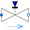

ValveLinearValve for water/steam flows with linear pressure drop |

|
Information
This information is part of the Modelica Standard Library maintained by the Modelica Association.
This very simple model provides a pressure drop which is proportional to the flowrate and to the opening input, without computing any fluid property. It can be used for testing purposes, when
a simple model of a variable pressure loss is needed.
A medium model must be nevertheless be specified, so that the fluid ports can be connected to other components using the same medium model.
The model is adiabatic (no heat losses to the ambient) and neglects changes in kinetic energy from the inlet to the outlet.
Parameters (9)
| allowFlowReversal |
Value: system.allowFlowReversal Type: Boolean Description: = true to allow flow reversal, false restricts to design direction (port_a -> port_b) |
|---|---|
| dp_start |
Value: 0.01 * system.p_start Type: AbsolutePressure (Pa) Description: Guess value of dp = port_a.p - port_b.p |
| m_flow_start |
Value: system.m_flow_start Type: MassFlowRate (kg/s) Description: Guess value of m_flow = port_a.m_flow |
| m_flow_small |
Value: if system.use_eps_Re then system.eps_m_flow * system.m_flow_nominal else system.m_flow_small Type: MassFlowRate (kg/s) Description: Small mass flow rate for regularization of zero flow |
| show_T |
Value: true Type: Boolean Description: = true, if temperatures at port_a and port_b are computed |
| show_V_flow |
Value: true Type: Boolean Description: = true, if volume flow rate at inflowing port is computed |
| dp_nominal |
Value: Type: AbsolutePressure (Pa) Description: Nominal pressure drop at full opening |
| m_flow_nominal |
Value: Type: MassFlowRate (kg/s) Description: Nominal mass flowrate at full opening |
| k |
Value: m_flow_nominal / dp_nominal Type: HydraulicConductance (kg/(s·Pa)) Description: Hydraulic conductance at full opening |
Connectors (3)
| port_a |
Type: FluidPort_a Description: Fluid connector a (positive design flow direction is from port_a to port_b) |
|
|---|---|---|
| port_b |
Type: FluidPort_b Description: Fluid connector b (positive design flow direction is from port_a to port_b) |
|
| opening |
Type: RealInput Description: =1: completely open, =0: completely closed |
Components (3)
| system |
Type: System Description: System wide properties |
|
|---|---|---|
| state_a |
Type: ThermodynamicState Description: State for medium inflowing through port_a |
|
| state_b |
Type: ThermodynamicState Description: State for medium inflowing through port_b |
Used in Examples (2)
|
Modelica.Fluid.Examples Model of a pumping system for drinking water |
|
|
Modelica.Fluid.Examples.DrumBoiler Complete drum boiler model, including evaporator and supplementary components |